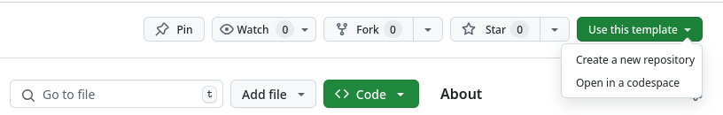
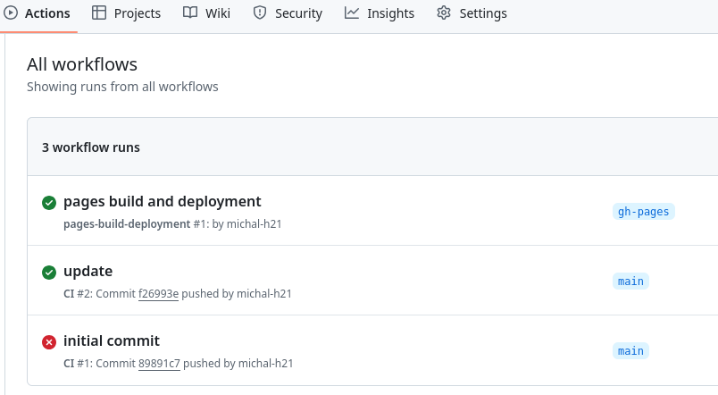

This template is designed for presentations that need more than just slides. It lets you create both the talk itself and a more detailed handout with notes and commentary. That way, you can generate everything from a single source—both the material for the live talk and something useful for people who didn’t attend.
It includes several main source files, each with a specific purpose:
\begin{frame}...\end{frame}
blocks is included both in the slides.tex and handout.tex outputs.
Any text outside of frames is excluded from the presentation but included
in the handout. This allows the author to provide detailed commentary,
background, or additional explanation that supports the talk.
You can edit these files to customize the presentation and handout to your needs. At the minimum, you will want to replace contents of presentation.tex with your own text, and you may also want to modify the preamble.tex file to include any additional packages or commands you need.
Create a New Github Repository

To start your own presentation using this template, click the "Use this template" button at the top of the GitHub repository page. This will create a new repository in your account with the same structure and files. You can then clone it, customize the content, and start building your own slides and handouts.
Usage of Frames and Handout Commentary
A basic syntax of the document used in presentation.tex is following:
\begin{frame}{Frame title}contents of the frame...\end{frame}Commentary included in the handout
For example, source code of one of the previous frames looks like this:
\begin{frame}[fragile]{Overview of Files}
\begin{itemize}
\item \textbf{\texttt{slides.tex}}
\item \textbf{\texttt{handout.tex}}
\item \textbf{\texttt{presentation.tex}}
\item \textbf{\texttt{preamble.tex}}
\end{itemize}
\end{frame}
\begin{itemize}
\item \textbf{\texttt{slides.tex}} – This file is used to generate the main
presentation in Beamer format. It contains the content that is shown during the talk.
The content inside the \begin{frame}...\end{frame} block is included in both
the presentation and the handout, but the itemize environment that follows the
frame environment is only included in the handout.
\mode<beamer|article>{
\title{Structured Presentation Template}
\author{Michal Hoftich}
\maketitle
}
You can use the \mode<beamer|article>{...} command to include content that
should be shown in both the presentation and the handout. This can be useful for the
presentation title or table of contents, for example.
To compile the presentation or the handout to PDF using LuaLaTeX, run the following commands:
$ lualatex slides.tex $ lualatex handout.tex
You can compile the output files using any standard LaTeX distribution that includes Beamer and the necessary packages.
Use TeX4ht to compile the presentation to HTML format.
$ make4ht -l handout.tex
The -l option ensures that LuaLaTeX is used as the compiler.
The HTML version is built from the article-style handout, not the Beamer slides. This makes it better suited for the web or long-term sharing, since it includes all explanations and doesn’t depend on slide layout.
This section explains how GitHub Actions is used to automatically generate and publish an HTML version of the handout whenever changes are pushed to the main branch.
The output is built using make4ht and published to the gh-pages branch, making it easy to share a web-readable version of the talk.
Key parts of the workflow that builds and publishes the HTML:
- name: Run make4ht
uses: xu-cheng/texlive-action/full@v1
with:
run: |
make4ht -lj index -a debug -d out handout.tex
- name: Publish the web pages
uses: peaceiris/actions-gh-pages@v3
with:
github_token: ${{ secrets.GITHUB_TOKEN }}
publish_dir: ./out
The workflow is defined in .github/workflows/main.yml. You can edit this file to customize the build process, such as changing the options passed to make4ht.
It uses two GitHub Actions: xu-cheng/texlive-action and peaceiris/actions-gh-pages. The first one lets you use any command available in the TeX Live installation, such as make4ht or lualatex. The second one publishes the contents of a specified directory to the gh-pages branch of your repository, which is used by GitHub Pages to serve static content.
Changes pushed to main branch trigger a GitHub Actions workflow that:
The command used is:
make4ht -lj index -a debug -d out handout.tex
This builds the HTML into the out/ folder, which is then published using the peaceiris/actions-gh-pages action, specified by the publish_dir setting.
This lets you use clean URLs like:
https://username.github.io/repo/
There’s no need to specify the filename in the link — GitHub Pages automatically looks for index.html by default. This makes it easier to share the presentation and helps avoid broken links due to filename mismatches.
For example, this presentation is available at: https://michal-h21.github.io/tex4ht-presentation/.

After you push changes to the main branch, you can check the Actions tab in your Github repository. It shows the status of the workflow, including whether it ran successfully or if there were any errors.
You can also check the logs of the workflow run to see what went wrong. If you encounter an error, it will be displayed in the logs, and you can use that information to debug the issue.
In this case, the filename of the TeX file was incorrect. I had to fix the filename in the GitHub Actions YAML file.
Once the workflow runs successfully, you can set up GitHub Pages to serve the gh-pages branch.
All output files produced by make4ht will be served on the web. They will be
available at: https://username.github.io/repo/, where username is your GitHub
username and repo is the name of your repository.